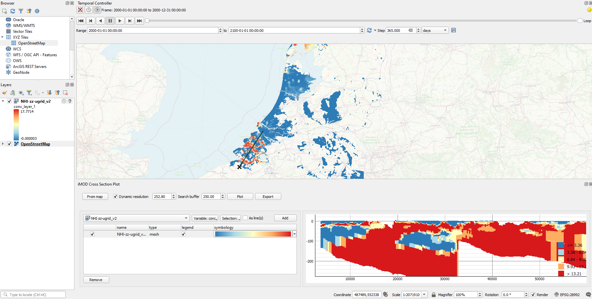
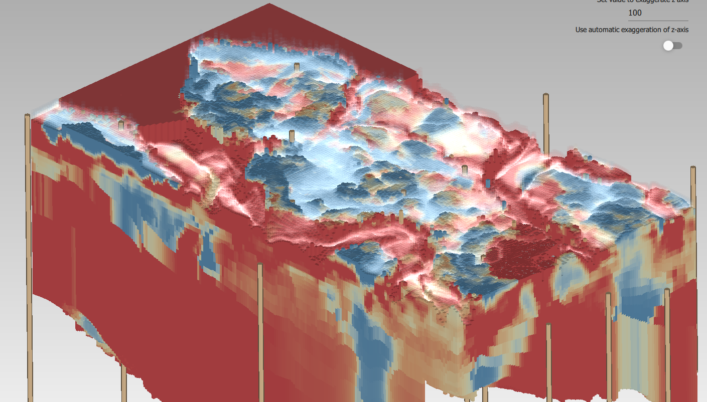

Introduction
What’s included
The iMOD Suite provides tools to efficiently build and visualize groundwater models.
Deltares is working to integrate and improve our groundwater software. Therefore iMOD is extended with a new iMOD Suite to link to the latest developments on the MODFLOW and on the changing requirements in the field of groundwatermodelling, most pressing currently the support of unstructured grids.
We created the new iMOD Suite to aid pre- and post-processing unstructured groundwater models. Furthermore, a second goal of this suite was to better connect to the latest developments in the data science ecosystem, by utilizing:
- Existing data format conventions (NetCDF, UGRID) instead of developing new ones, allowing more user flexibility to find the right tools for the right job.
- Widely used and tested software (QGIS) to which we add our extension, instead of creating complete programs ourselves.
- Modern programming languages (C++ and Python) that allow connecting to a big and lively software ecoystem.
The iMOD Suite offers different modules which support modelling with MODFLOW 6 (including unstructured meshes):
iMOD Viewer: The iMOD Viewer consist of a standalone 3D viewer and a QGIS plugin. The iMOD QGIS Plugin allows visualisation of model input and output with tools for cross-sections, timeseries and link to the 3D viewer. It supports structured NetCDF, UGRID and IPF files. And the iMOD 3D Viewer for interactive 3D visualisation of unstructured input and output. Supports UGRID file format and IPF borelog files.
iMOD Python: A Python package to support MODFLOW groundwater modeling. It makes it easy to go from your raw data to a fully defined MODFLOW model, with the aim to make this workflow reproducable.
iMOD Coupler: Software that couples MODFLOW 6 to other computational cores. It currently supports a coupling to MetaSWAP, but additional computational cores are planned in the future.


Comparison with iMOD 5
The proven technology and expertise of iMOD is consolidated within iMOD 5. iMOD 5 supports structured calculations with MODFLOW2005 and structured MODFLOW 6 and can be coupled to the unsaturated zone model MetaSWAP. The model input and output can be visualised in its fast interactive viewer. The documentation of iMOD 5 can be found here .
Important technological innovations will be developed in the new iMOD Suite, whereas iMOD 5 will be maintained the coming years, but will see no big new feature developments. Table 1 and Table 2 respectively provide comparisons between iMOD Suite and iMOD 5 for the components and supported MODFLOW6 packages.
| iMOD Suite | iMOD 5 | |
|---|---|---|
| computational kernels | MODFLOW 2005, MODFLOW 6, SEAWAT, MT3DMS, MetaSWAP | MODFLOW 2005, MODFLOW 6, SEAWAT, MT3DMS, MetaSWAP |
| file types | NetCDF, UGRID, shp, tiff, idf, ipf, gen | idf, ipf, isg, gen |
| grid types | structured & unstructured | structured & nested structured |
| scripted pre-processing | iMOD Python | iMOD Batch |
| interactive pre-processing | (QGIS) | iMOD GUI |
| scripted 2D plot | iMOD Python | iMOD Batch |
| interactive 2D plot | iMOD QGIS plugin (& QGIS) | iMOD GUI |
| scripted 3D plot | iMOD Python | |
| interactive 3D plot | iMOD 3D Viewer | iMOD GUI |
| Package | Description | iMOD Suite | iMOD 5 |
|---|---|---|---|
| DIS | Structured Discretization | x | x |
| DISV | Discretization by Vertices | x | |
| DISU | Structured Discretization | ||
| IC | Initial Conditions | x | x |
| OC | Output Control | x | x |
| NPF | Node Property Flow | x | x |
| HFB | Horizontal Flow Barrier | x | x |
| STO | Storage | x | x |
| CSUB | Skeletal Storage, Compaction, and Subsidence | ||
| BUY | Buoyancy | x | |
| CHD | Constant-Head | x | x |
| WEL | Well | x | x |
| DRN | Drain | x | x |
| RIV | River | x | x |
| GHB | General-Head Boundary | x | x |
| RCH | Recharge | x | x |
| EVT | Evapotranspiration | x | x |
| MAW | Multi-Aquifer Well | ||
| SFR | Streamflow Routing | x | |
| LAK | Lake | ||
| UZF | Unsaturated Zone Flow | x | |
| MVR | Water Mover |